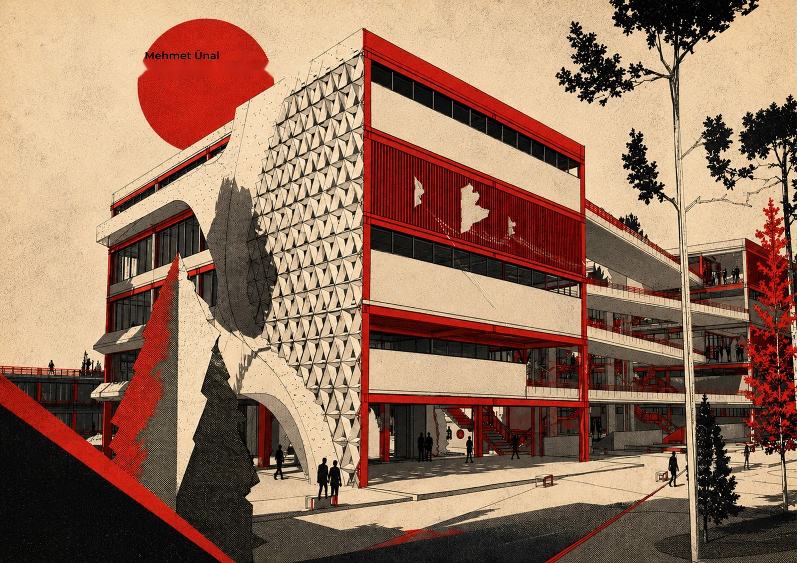
BODY,
SPACE,
HEALTH.
The site is the former Çamlık Vocational School in Denizli: an engineering academy from the 1970s, later a vocational school, now largely demolished. Mature pine trees, level changes, old building footprints, walking routes and the F-104 Starfighter jet that gave the campus its nickname, the “school with the plane”, still make its layers legible.
Rather than treating the site as a blank slate, the project reads it as a layered ground. The new dental hospital and faculty build on the traces of the old campus, keep the trees and the aircraft as an urban anchor, and turn them into a new public framework for contemporary health and education.

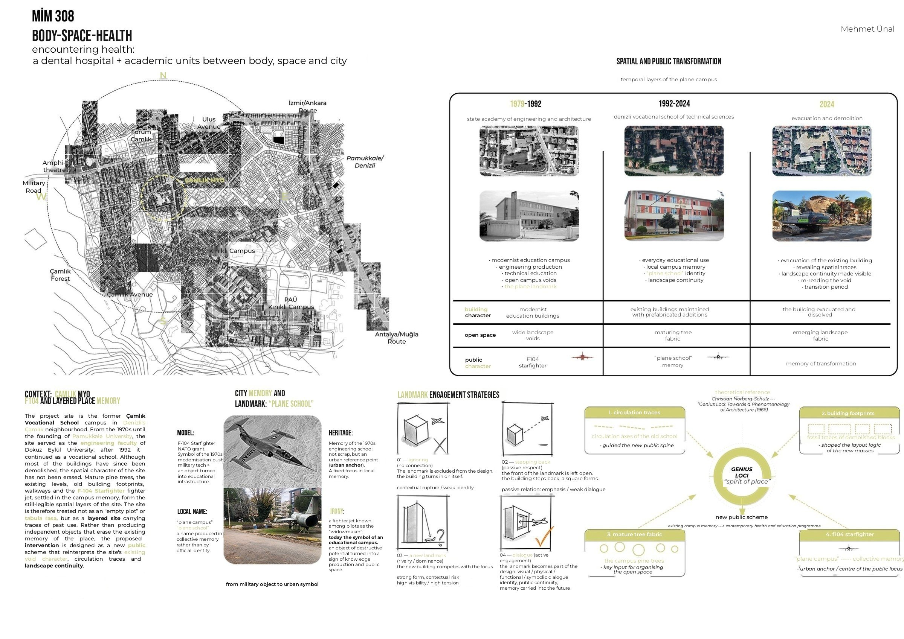
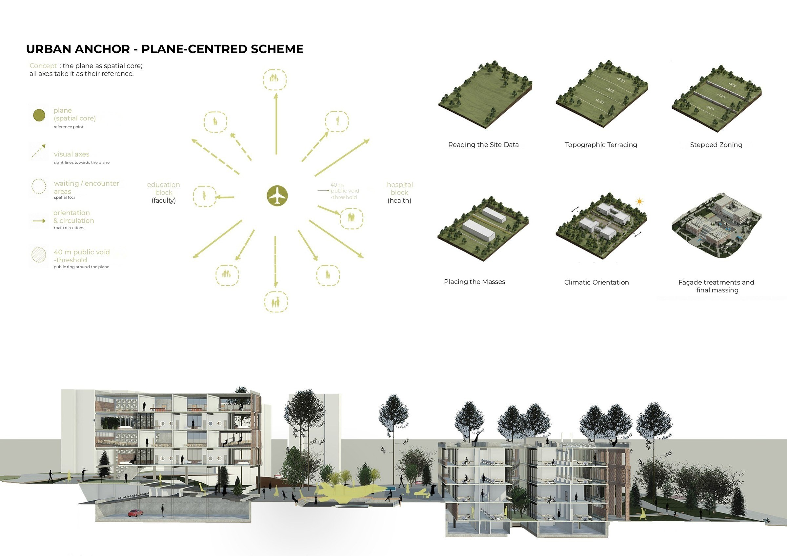
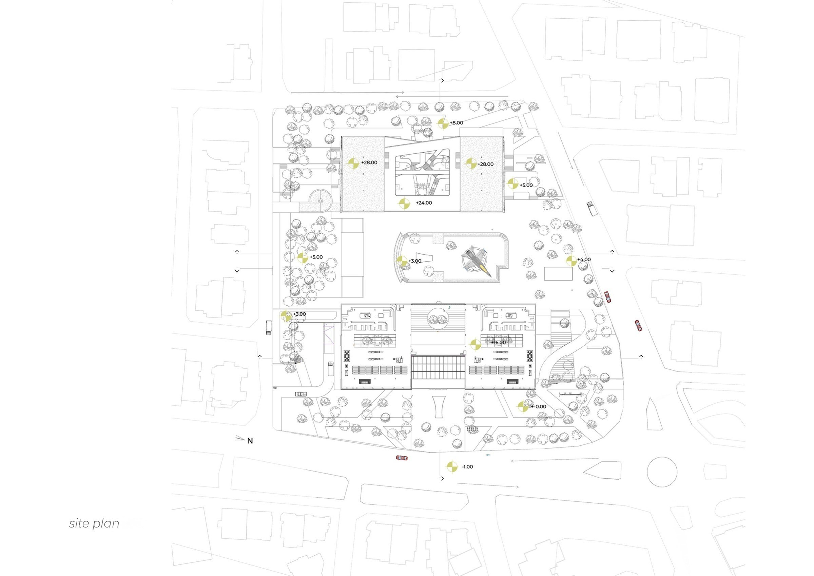

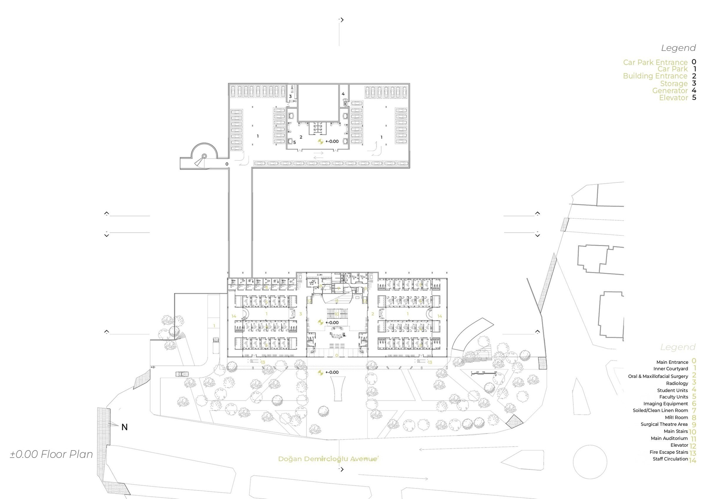
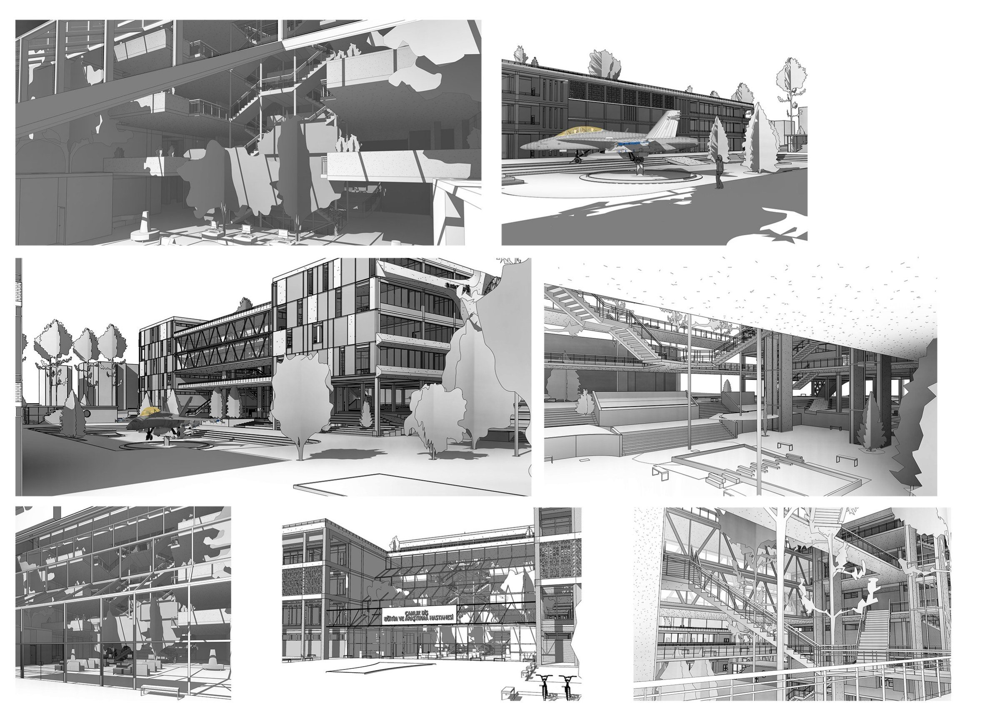

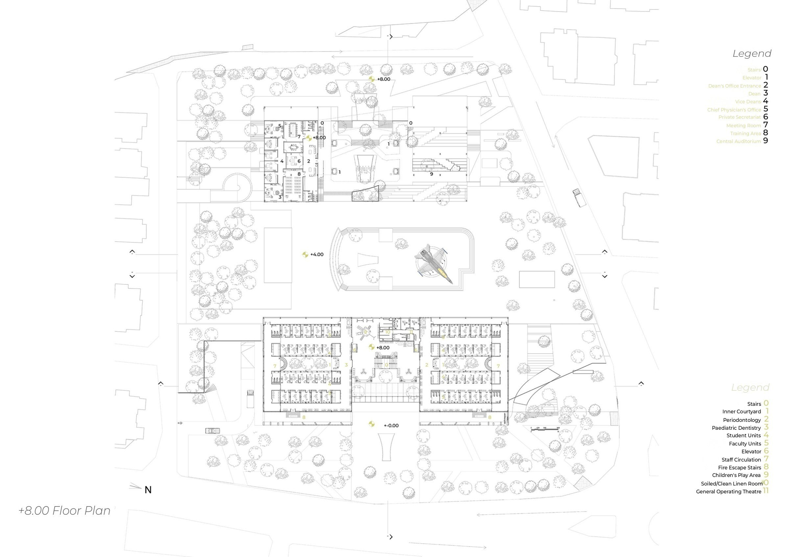
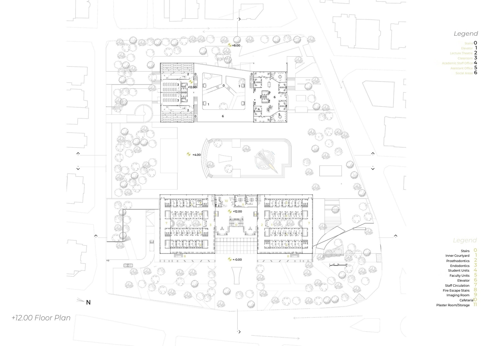
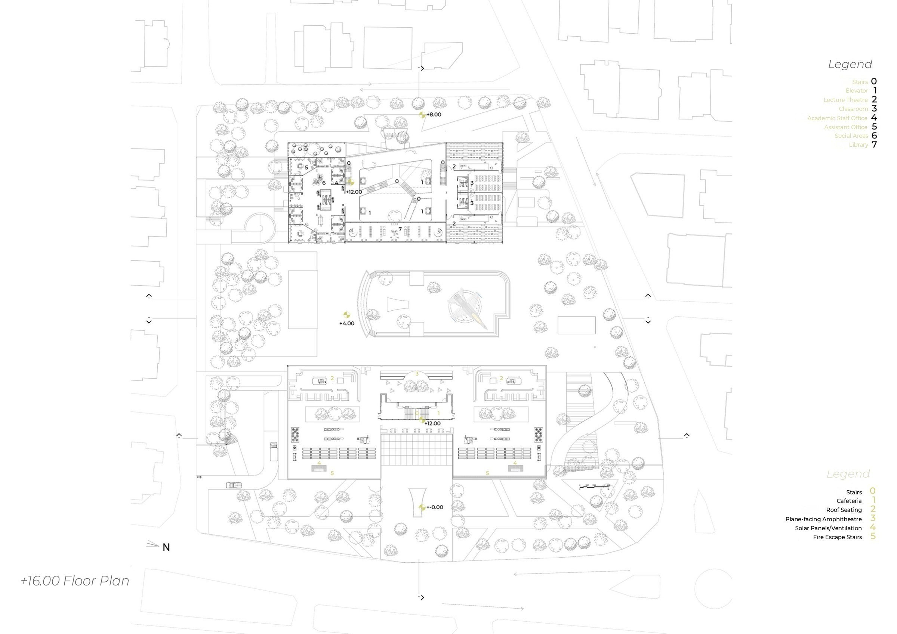

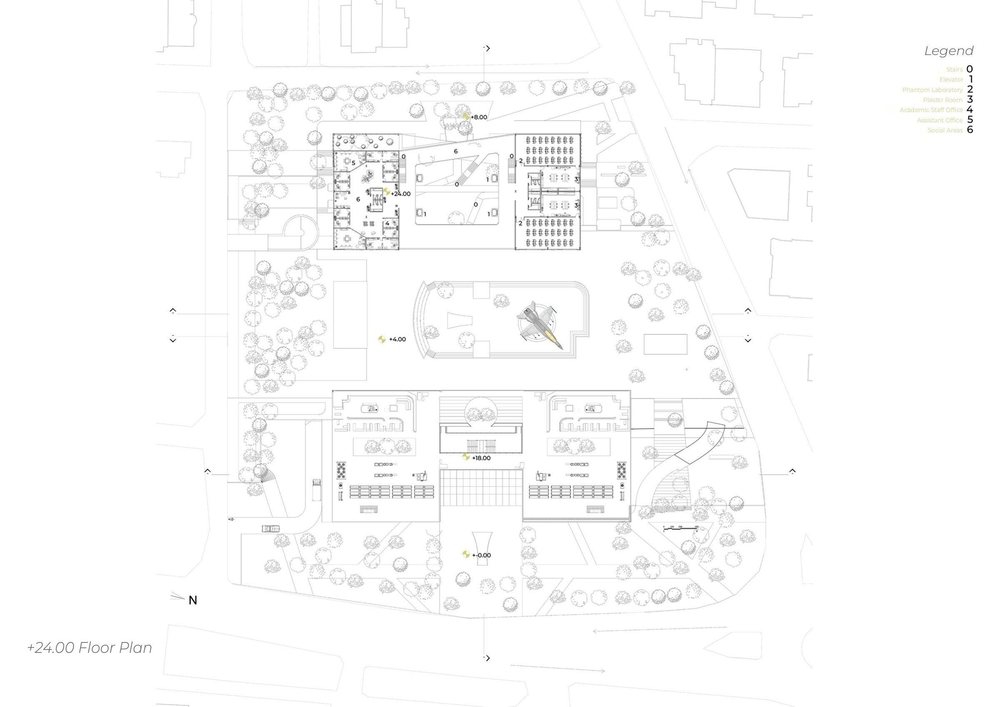

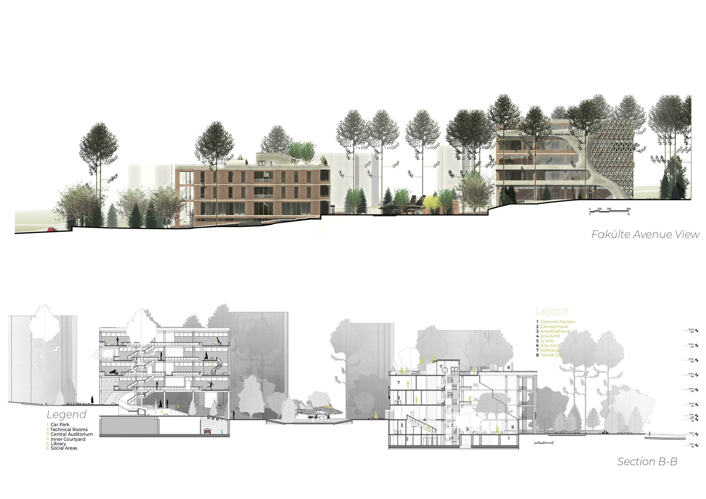
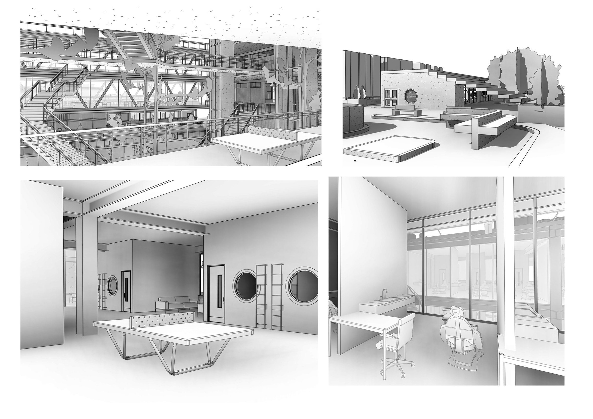
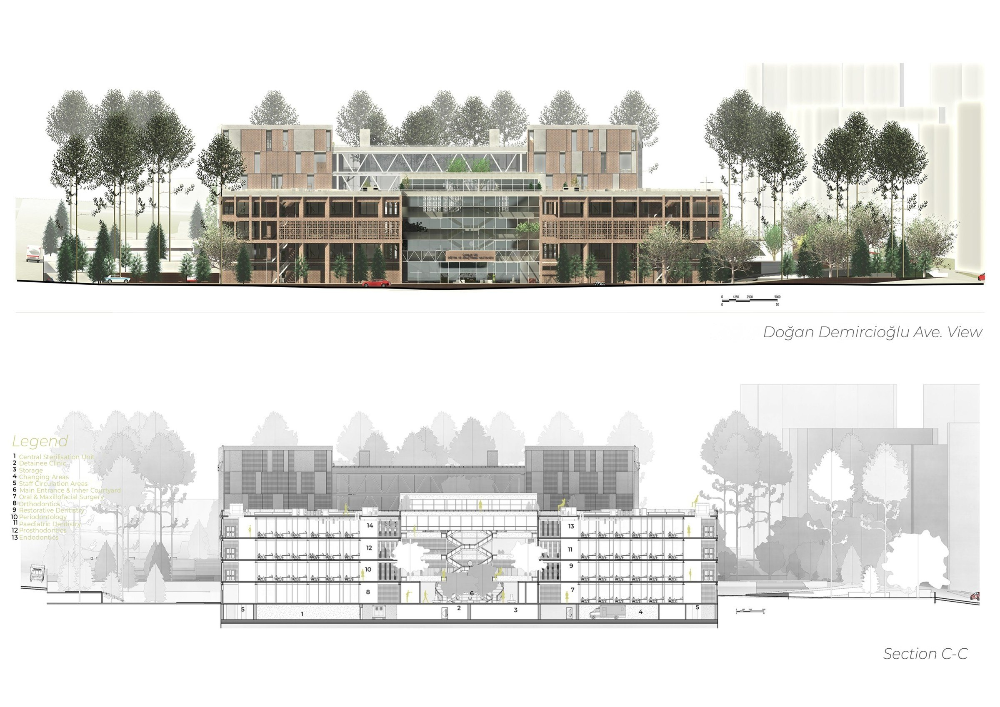
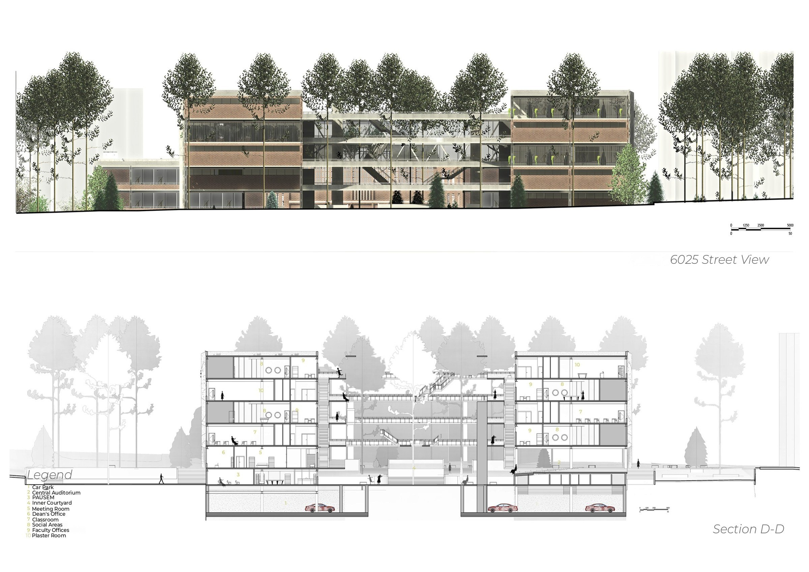

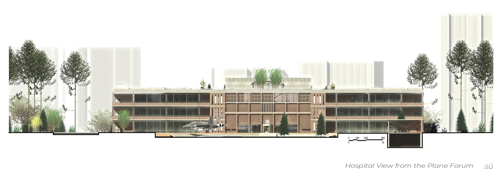